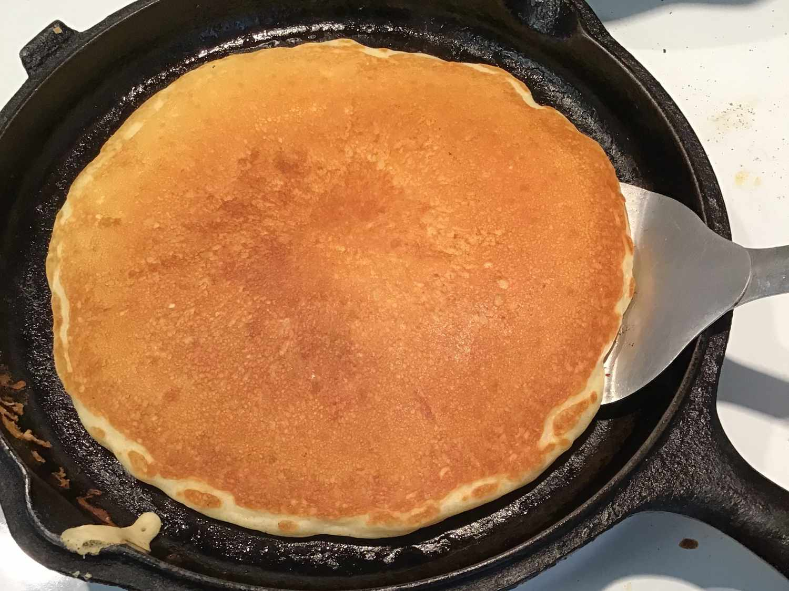

Pancakes

This is a very delicious buttermilk pancake recipe. My family loves them.
Ingredients
- 1 ¼ cups all-purpose flour
- 1 ¼ cups buttermilk
- ¼ cup white sugar
- ¼ cup vegetable oil
- 1 large egg
- 1 teaspoon baking powder
- 1 teaspoon baking soda
Directions
- Preheat a skillet over medium heat.
- Combine flour, buttermilk, sugar, oil, egg, baking powder, and baking soda in a blender. Purée until smooth.
- Pour batter onto the hot skillet to form 5 pancakes. Flip pancakes when edges appear to harden. Flip pancakes; cook until the bottoms are golden brown.